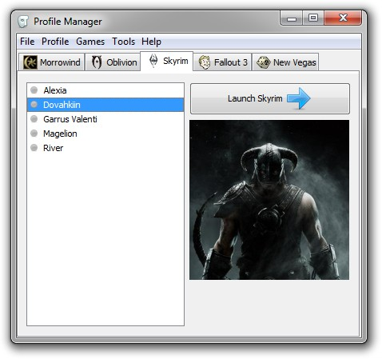

The tabs across the top show the games that the profile manager is currently managing. On the left is the profile list. On the right is the launch game button, and below that is the profile image for the currently selected profile.
Profile List, displays all the profiles for the current game. The profile with a green dot next to it is the currently active profile. Selecting a profile from this list will cause the image associated with it (if any) to display and enables you to edit this profile.
Launch Game Button, starts the current game using the selected profile. This button is disabled until a profile has been selected from the profile list.
Profile Image, this is where any images associated with a profile will appear. This will display images up to 200x200px, any images larger than this will have their edges cropped so they display at this size.
Occasionally notifications will appear below the profile image. Very rarely this will inform you that an error has occurred, most errors that cause this to happen won't effect the usability of the program. If you're curious about the error you can check the error.log file for more information.